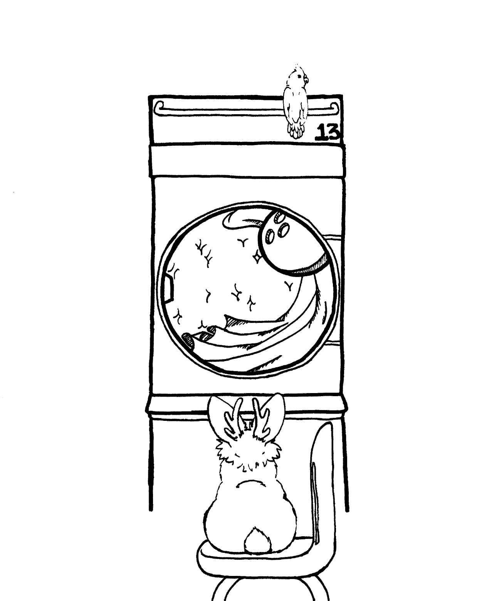
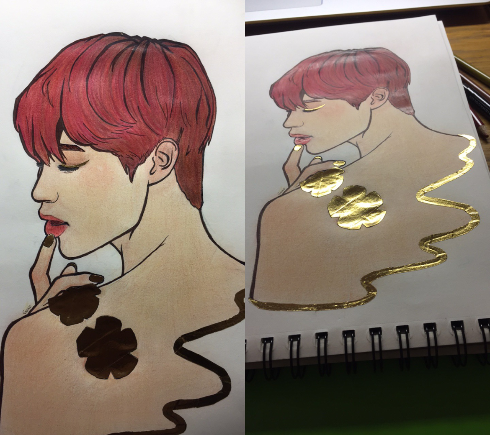
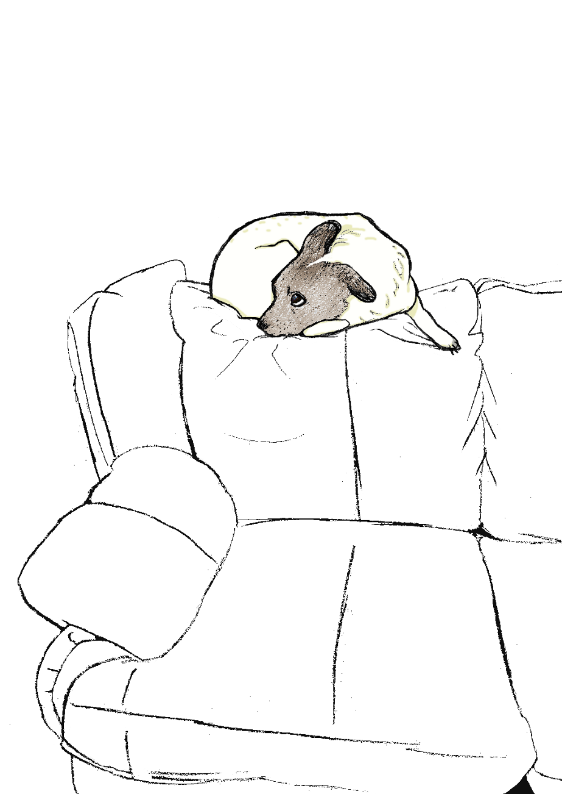
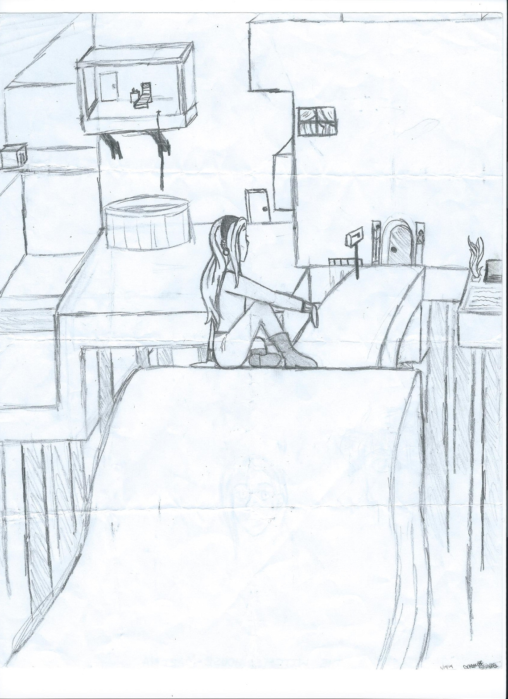

Here are some old art pieces.
This was art that I made with a friend in mind. They really like jackalopes and their nickname for me is Birdy, so that's why those two animals are there.
The urge to draw washing machines was strange, but it's what inspired this piece. Also, I found out that bowling can be fun.
This was fanart that I sent in to a show where one of my favorite artists were set to appear.
However, their appearance was cancelled when one of their labelmates passed away since the artists were close.
Still, it is a nice piece to pull out and look at from time to time since it's shiny. This effect was acheived using gold washi tape!
I made this when my dog Sparky was curled up on the couch.
He was really comfy up there for a long while so I managed to draw the whole thing in one sitting.
Then I scanned it and cleaned it up digitally.
This is the oldest piece here! I'm no architecture student so there aren't any truly straight lines. But, the house is supposed to have a dreamy or magical appearance.